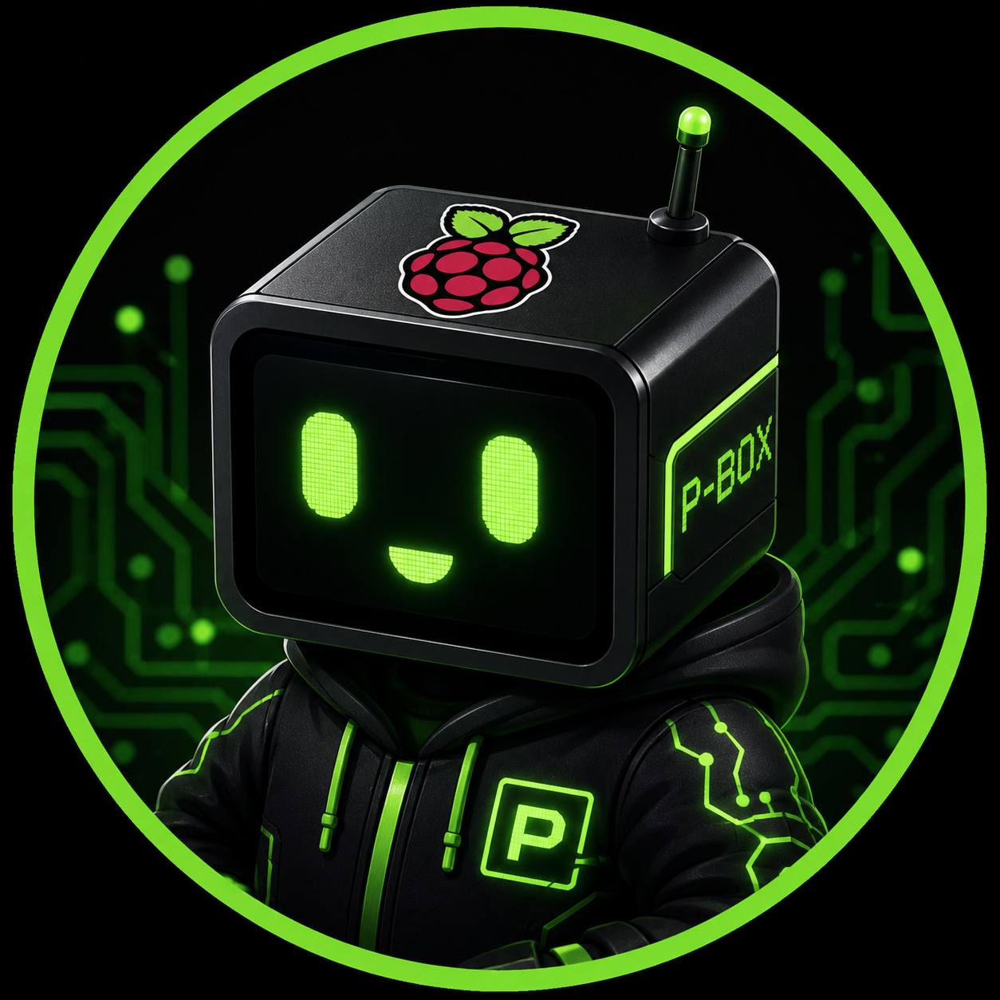

01 / 02

AUTONOMIAEDGE AI
AGENTE AUTÔNOMO / RASPBERRY PI
P-Box
Uma inteligência que vive em uma placa de 85 milímetros. Tem memória, protege a rede, acompanha a rotina e opera o mundo físico, continuamente.
- Agentes de IA
- Edge computing
- Automação
- Cybersecurity